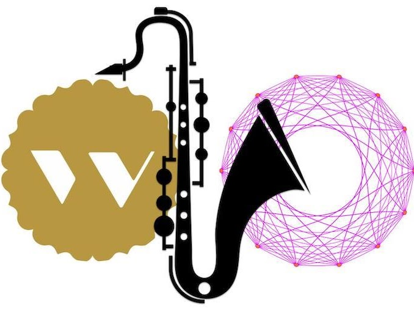

LINKING LOST JAZZ SHRINES
THIS PAGE IS NO LONGER UPDATED AS OF JANUARY 5, 2024

ABOUT THE PROJECT
Linking Lost Jazz Shrines is a collaboration between Weeksville Heritage Center (WHC, https://www.weeksvillesociety.org/) and Semantic Lab at Pratt (semlab.io) using the Weeksville Lost Jazz Shrines of Brooklyn (WLJSB) oral history collection (http://bit.ly/FindingAidWLJSB) as source material for creating linked open data. The WLJSB collection was born out of a 2008 research proposal documenting Central Brooklyn’s cultural legacy of jazz between the 1930s and 1960s. By transforming valuable information from the oral histories into linked open data, the Linking Lost Jazz Shrines project will make these collections—and the connections they provide—more discoverable and accessible to both Brooklyn community members and jazz researchers who would benefit from significant resources about Central Brooklyn’s nearly lost jazz culture.
The Semantic Lab's Linked Jazz project (https://linkedjazz.org/) was both the inspiration for and the starting point of the Linking Lost Jazz Shrines project. Linked Jazz is a dataset of relationships between people in the jazz community. The Linking Lost Jazz Shrines project adopted the same core data modeling structure and, in collaboration with the Semantic Lab, enhanced the Linked Jazz ontology to enable creation of linked data not only between people, but also between people and music groups, people and music venues, and music groups and music venues. The Linking Lost Jazz Shrines project proposes to use the Semantic Lab’s DADAlytics tool (tools.semlab.io/), which is composed of a Named Entity Recognition (NER) service, and the Sélavy linked data triple-making tool. The resultant Linking Lost Jazz Shrines data will be incorporated into the Linked Jazz dataset through the Semantic Lab's Wikibase (base.semlab.io), and data will also be stored in GitHub (https://github.com/weeksvilleheritagecenter/linking-lost-jazz-shrines) for ease of direct access and download. A long term goal of the project is to integrate the Linking Lost Jazz Shrines data into the Linked Jazz network visualization (https://linkedjazz.org/network/).
Linking Lost Jazz Shrines on Omeka S (currently under development) will serve as the initial access and discovery point of the project data, especially for those who may not have familiarity querying a Wikibase instance or accessing data via GitHub. Each of the twenty-eight transcripts from the oral history will have its own Omeka S item page, replete with all associated metadata (interviewer, interviewee, subjects, date, etc.) Whereas Omeka Classic only provided text strings fields for metadata, Omeka S allows for the inclusion of Uniform Resource Identifiers (URIs), the building blocks of linked data.
As of September 2020, ten of the twenty-eight WLJSB transcripts have been enhanced with Semantic Lab at Pratt Wikibase URIs for relevant people, music groups, and music venues, as well as Library of Congress URIs for additional subjects. For reference, the Tulivu-Donna Cumberbatch interview is an example of one of the processed transcripts where the applicable URIs have been added to the Omeka S resource.
The creation of linked open data requires Uniform Resource Identifiers (URIs) and an environment where URIs can be linked together through meaningful relationships. The Wikibase instance managed by the Semantic Lab at Pratt meets both of these needs for the Linking Lost Jazz Shrines project.
In addition to simply storing the data, the Wikibase application allows for querying of the data. Get started with a quick query of all data currently part of the Linking Lost Jazz Shrines project here. (Click the blue play button (▶️) on the left side of the screen to run the query.)
As of September 2020, the entities for ten of the twenty-eight WLJSB transcripts have been added to the Wikibase and related to the Linking Lost Jazz Shrines item (Q18807) through the part of project property (P11). These Wikibase items also indicate an item's class (person, music group, or music venue) and, where applicable, the corresponding records in Wikidata and/or Library of Congress. The Wikibase record for Thelonious Monk (Q71) is an example of one of the more complete records.
In addition to the Omeka S and the Semantic Lab at Pratt's Wikibase, project data can be quickly and directly accessed and downloaded through the Linking Lost Jazz Shrines GitHub repository.
Data in the repository will continue to evolve as the project continues beyond its initial granting period. As of September 2020, the GitHub repository contains the following datasets for each of the ten pilot transcripts:
Formatted transcripts (csv)
Omeka S subjects (csv)
Full Omeka S metadata (json)
Additionally, the Wikibase folder of the repository includes a log of building blocks, enhancements and additions, corrections, and "to do" tasks. Data was added to Wikibase through both manual and programmatic processes, the latter through the python scripts available from the Semantic Lab at Pratt wikibase-load-scripts repository.
All data from the GitHub repository has also been deposited into the preservation repository Zenodo. Additional releases will be deposited into the Zenodo repository as the project progresses.
In addition to the creation of collections as data, the Collections as Data: Part to Whole grant also supports the development of two distinct project models:
The Use Model supports the computational use of collections as data, describing the positions, specific duties, services, and collaborations that will support computational use of collections as data by specific communities, including how the activities will be sustained post funding.
The Implementation Model, describes the workflows, infrastructure, code, positions, specific duties, and services that make it possible to create and provide access to collections as data, including how the activities will be sustained post funding.
A third model associated with Linking Lost Jazz Shrines is the Enhanced Linked Jazz Ontology, which is the project data model related to the technical creation of linked data. All three models can be accessed through the MODELS page of this site.
Open source tools developed by Semantic Lab at Pratt co-director Matt Miller aid in the creation of linked open data. In 2017, the Semantic Lab was awarded an IMLS grant to begin developing DADAlytics, which consists of a Named Entity Recognition (NER) service and Sélavy, an application to create linked data triples from a textual document. In October 2019, the alpha version of Sélavy was released. Interested users are invited to view the Sélavy Alpha Demo Video or try the try Sélavy.
In conjunction with other Semantic Lab initiatives, the Linking Lost Jazz Shrines project is being used to test the alpha version of Sélavy. As of September 2020, ten of the twenty-eight LLJS transcripts have been formatted and uploaded into Sélavy, and relevant entities identified and associated with their respective URIs. The Linking Lost Jazz Shrines project team looks forward to the completion of Sélavy to be able to conduct the next step of the process: generating linked data triples by highlighting meaningful relationships between the entities. These triples will then be added into the Semantic Lab Wikibase, and merged with the existing Linked Jazz dataset.
As of September 2020, the Linked Jazz datasets is migrating to Wikibase, which will serve as the new infrastructure for all of the Semantic Lab's linked open data projects. Once this transition has been completed, additional person, music group, and music venue data and relationships generated from the Linking Lost Jazz Shrines project will be incorporated into the Linked Jazz network visualization. To see the current version of the Linked Jazz network visualization, click here.
WEEKSVILLE HERITAGE CENTER
Weeksville Heritage Center is a multidisciplinary museum dedicated to preserving the history of the 19th century African American community of Weeksville, Brooklyn - one of America’s many free black communities.
WHC's mission is to document, preserve and interpret the history of free African American communities in Weeksville, Brooklyn and beyond and to create and inspire innovative, contemporary uses of African American history through education, the arts, and civic engagement. Using a contemporary lens, we activate this unique history through the presentation of innovative, vanguard and experimental programs.
Zakiya Collier, former WHC Oral History Intern, is the Linking Lost Jazz Shrines Project Lead and Archivist. Obden Mondesir, Oral History Project Manager, is the Linking Lost Jazz Shrines Project Senior Administrator.
SEMANTIC LAB AT PRATT
The Semantic Lab at Pratt is a research group from Pratt Institute, School of Information which serves as a testbed and an incubator for the development of novel methods and tools for the application of semantic technologies to libraries, archives and museums. The Linked Jazz project, which informs and is enhanced by the Linking Lost Jazz Shrines project, was the inaugural project of the Semantic Lab.
The Semantic Lab is co-directed by M. Cristina Pattuelli, Pratt Institute Professor and Coordinator of the Master of Science in Museums and Digital Culture, and Matt Miller, Pratt Institute Adjunct Professor and Linked Data Applications Technical Specialist at Library of Congress. The Semantic Lab Research Fellow Sarah Adams is the Linked Data Consultant and Semantic Lab liaison for the Linking Lost Jazz Shrines project.